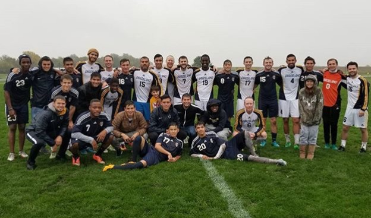

I joined Graceland in the Fall of 2017 and currently I am a freshman.
Soccer
I play in the JV team of Graclenad and Soccer is a huge part of my life. I love to play soccer and my favorite soccer player is Cristiano Ronaldo.
Enactus
Enactus, formerly known as SIFE or Students in Free Enterprise, is an international nonprofit organization that brings together student, academic and business leaders who are committed to using the power of entrepreneurial action to improve the quality of life and standard of living for people in need. On 1,600 university campuses worldwide, Enactus provides students the opportunity to channel their unique talents, passions and ideas to create projects that empower others. The Graceland University Enactus team is a student-led organization that works in several global communities. Team members strive to create lasting relationships with the people they work with. As a team, GU Enactus uses an entrepreneurial approach to help others help themselves. They empower others to identify their own needs and to create their own solutions. Using business models and analytical approaches, GU Enactus is able to see sustainable change and lasting impact as a result of their project work.
Chess Club
I am glad to be the president of Chess club and learn and teach my peers how to play chess.

Academic Student Council
I am glad that I was part of ASC for the first semester of 2017-2018 year. It added a lot to my experiences.